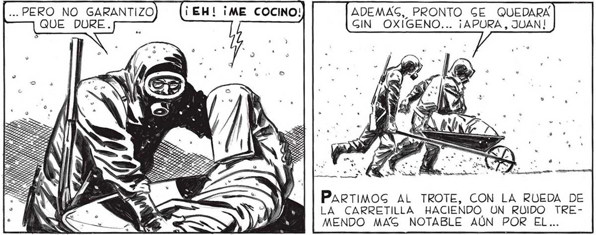
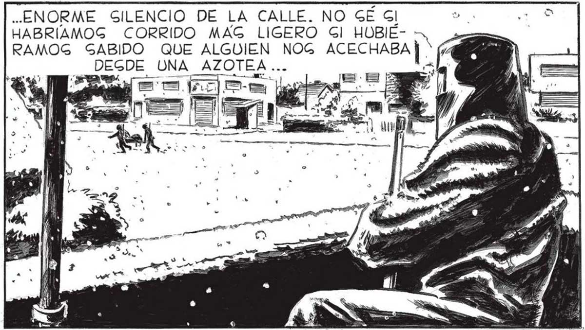

NI FALTA QUE HACE. EN LA FERRETERÍA HABRA TODO LO QUE NECEGITAMOS. Lo QUE IMPORTABA AHORA ERA REGCATAR A PABLO, NO DETENERNÑOG PARA CONTEMPLAR LA INCREÍBLE MAGJ NITUD DEL DEGAGTRE. PRONTO EGTUVIMOS DENTRO DE LA FERRETERÍA, y EN GEGUIDA LLEGAMOG A LA TRASTIENDA. ajaja AQUÍ” TIENES, PABLO. ENVUELVETE EN LA TELA DEGDE LA CABEZA A LOS PIES. HAZTE UN BUEN PAQUETE ¿ENTENDIDO? mo —P AS oy vr” ... PAGAMOG CERCA DEL CUERPO INANIMADO DE POLGKY, NUEGTRO INFORTUNADO AMIGO. COMO BUEN HOMBRE DE CIENCIA, FAVALLI GABIA CONCENTRARGE EN LO QUE REALMENTE IMPORTABA. Ll e AMINAMOG A BUEN PAGO. FAVALLI NO AMINORO” LA MARCHA NI CUANDO... Fue FACIL ENCONTRAR LO QUE FAVALLI QUERÍA Por SUERTE LA LIMPIEZA ERA GENCILLA: ADEMAS DE LIVIANOG LOG COPOG ERAN FOGFOREGCENTES, PALO QUE HACIA 24 GENCILLO EL PROBLEMA DE ENCONTRARLOS. PRONTO TUVIMOS LA TRAGTIENDA LIBRE DE LOG MORTIFEROG COPOG. AHORA PODIAMOS ABRIR EL GOTANO. NO TIENEN QUE QUEDAR NI YY RAGTROG DE LOGS COPOG. TAMBIEN TENEMOG QUE GACUDIRNOS NOGOTROS. ... PERO NO GARANTIZO QUE DURE. p—— ADEMAS, PRONTO GE QUEDARA GIN OXIGENO... ¡APURA, JUAN! PARTIMOS AL TROTE, CON LA RUEDA DE LA CARRETILLA HACIENDO, UN ROIDO TREMENDO MAG NOTABLE AÚN POR EL... ¡EH, PABLO! ¿ESTAG Al TODAVIA 2 í "ON 5 AHORA BAJARÉ YO Y TERMINARÉ DE ENVOLVERLO BIEN Y LO GACARE. TÚ, MIENTRAS, SACA UNA CARRETILLA Y EGPEÉRANOG AFUERA. ¡NO! ACABO DE IRME AL CINE ... BIEN. POR LO MENOG CONGERVA EL ANIMO. VEN, JUAN, BUSQUEMOS LO QUE NECEGITAMOS PARA GACARLO: PLUMEROG, EGCOBAS, Y UN ROLLO DE TELA PLAGTICA DE EGSA QUE GE UGA PARA MANTELES. FAvALLI ANDUVO LIGERO. APENAS, TUVE LA CARRETILLA AFUERA, APARECIO CON PABLO AL HOMBRO. TENEMOG QUE APURARNOS, JUAN... CREO QUE EGTA BIEN AISLADO...f= . rá eS E : A 0 s yo ..ENORME SILENCIO DE LA CALLE. NO GÉ Gl HABRIAMOG CORRIDO MAG LIGERO Gl HOBIÉRAMOG SABIDO QUE ALGUIEN NOG ACECHABA DEGDE UNA_AZOTEA ... a A jasa Mm ol

